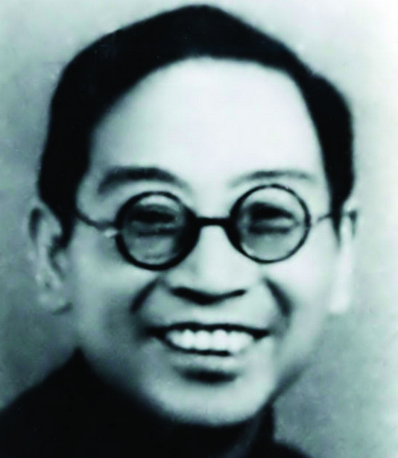

◆ 道光年间，桂林有三合班、三庆班，组织者不详，这是桂林最早的草台班。
◆ 瑞华班-1860年（清咸丰十年）成立于桂林，着名演员有：生角刘玉彩；旦角大喜美、小喜美、仁苟等；
◆ 庆芳班-1862年（清同治元年）成立于桂林。
◆ 光绪二十八年，桂剧艺人林秀甫、何秀元效仿上海戏园在桂林创建了第一个戏园- "景福园".从此。桂剧开始有了固定性场所的商业演出；
◆ 民国元年（1912年）林秀甫效仿上海"髦儿"戏成立了桂剧第一个女子科班"福珍园",从此，桂剧便出现了女性演员。
◆ 1938年4月欧阳予倩应马君武之邀到桂林试行桂剧改革、从事抗日剧运；导演了新桂剧《梁红玉》和话剧《曙光》等剧。同年8月下旬离桂赴港；
◆ 1939年9月下旬，欧阳予倩再度受马君武邀请，举家迁至桂林，全力从事桂剧改革和抗战戏剧运动；同年11月，担任广西戏剧改进会会长并成立桂剧实验剧团任团长，建立导演制、吸收新唱腔、编演新剧目、采用布景美化舞台，使桂剧有了新的起色，并为桂剧创作、改编和整理了一大批新剧目。
◆ 1940年欧阳予倩建立"广西省立艺术馆",任馆长，使广西有了第一座现代的剧场；创办"广西省戏剧改进会附属戏剧学校",培养桂剧新人；
◆ 1944年2月25日至5月19日，欧阳予倩与田汉、瞿秋白等人发起并主持了轰动全国剧坛的"西南第一届戏剧展览会",由桂剧实验剧团、启明科班、桂剧实验学校等三个单位参加演出《木兰从军》、《桃花扇》、《人面桃花》、《江汉渔歌》、《牛皮山》、《女斩子》、《南貂蝉》、《李大打更》、《秦王吊孝》等，效果极佳，广获好评，桂剧从此进入中国十大戏曲剧种行列；
◆ 自清末以来，桂剧得到快速发展，出现了林秀甫、蒋晴川、刘吉甫、福荣、福喜、宝龙、宝福、宝杰、六龙车、碧玉箫、"前四大名旦"（凤凰鸣、如意珠、桂枝香、小桃红）、刘仪高、李仪芳、何健章、何健浓、白凤奎、周兰魁、颗颗珠、定风珠、露凝香、杜木生、唐仙蝶、蒋金凯、刘万春、王盈秋、蒋金亮、玉芙蓉、后四大名旦"（ 谢玉君、方昭媛、尹羲、李慧中）等一批优秀桂剧表演艺术家。
◆ 1952年，桂林市桂剧改进一团尹羲主演的《拾玉镯》和谢玉君主演的《世龙抢伞》进京演出，得到北京文化界特别是欧阳予倩的好评。尹羲得到了毛泽东、周恩来等中央众多领导人的接见；
◆ 1953年，由桂剧改进一团在和平戏院开办桂剧"桂"字科班；
◆ 1955年，由桂剧二团在太平戏院开办桂剧"文"字科班；
◆ 1956年，由桂剧三团在人民戏院开办桂剧"艺"字科班；
◆ 1960年，筱兰魁主演的《唐知县审诰命》得到了中南局书记陶铸的嘉奖；
◆ 1974年9月，现代桂剧《滩险灯红》应邀晋京参加全国现代戏会演，主演罗桂霞应周恩来总理邀请出席中华人民共和国建国25周年国宴；
解放后，桂剧进入了新的发展时期，涌现出了尹羲、秦彩霞、筱兰魁、罗桂霞、苏飞麟、刘民凤、陈婉仙、章凤仙、苏芝仙、林瑞仙、王琼仙、梅兰香、龙民介、唐明刚、蒋明侠、阮冲、曾素华、黎久福、翁桂斌、阳桂峰、阳桂秋、秦桂娟、周桂童、蒋燕麟、马艺松、欧阳艺莲、蒋文萱等一批杰出的桂剧表演艺术家。
◆ 1989年10月，桂剧《失子成疯》荣获广西首届戏曲青年演员大奖赛表演一等奖；
◆ 1990年，桂剧《失子成疯》获第二届中国戏剧节优秀演出奖；
◆ 1992年1月，桂剧《瑶妃传奇》荣获广西第三届剧展最高奖--桂花金奖，并获广西文艺创作铜鼓奖；
◆ 1992年6月，桂剧《瑶妃传奇》应国家文化部邀请，晋京并进中南海汇报演出，受到党和国家领导人、全国着名文艺界专家和首都观众的高度赞誉和一致好评；
◆ 1993年，桂剧《瑶妃传奇》荣获第三届文化部文华新剧目奖和文华表演奖；
◆ 1996年5月，桂剧《风采壮妹》荣获广西第四届剧展最高奖--桂花金奖，并获广西文艺创作铜鼓奖；
◆ 1997年2月，桂剧《风采壮妹》应国家文化部邀请晋京汇报演出并荣获中宣部五个一工程奖；
◆ 1997年9月，桂剧《天女散花》、《打棍出箱》荣获广西第二届戏曲青年演员大奖赛表演一等奖；
◆ 1998年、2001年，桂剧《金猴出箱》两次参加中央电视台春节联欢晚会，并获全国观众最喜爱优秀节目奖；
◆ 1999年，桂剧《砸酒坛》获全国曹禺杯小戏小品大赛专业组二等奖；
◆ 2000年，桂林市桂剧团入选中国文化部《中国着名艺术表演团体名录》；
◆ 2000年1月，桂剧《漓江燕》荣获广西第五届剧展最高奖--桂花金奖，并获广西文艺创作铜鼓奖；
◆ 2001年11月，桂剧《漓江燕》荣获第七届中国戏剧节曹禺戏剧奖剧目奖；
◆ 2002年，张树萍荣获第十九届中国戏剧梅花奖；
◆ 2003年，桂剧《砸锁》获首届中国博兴国际小戏艺术节大赛优秀剧目大奖；
\◆ 2005年1月，桂剧《大儒还乡》荣获广西第六届剧展最高奖--桂花金奖，并获广西文艺创作铜鼓奖；
◆ 2005年12月，桂剧《火烧摘星楼》荣获广西第三届戏曲青年演员大奖赛表演一等奖；
◆ 2006年12月，桂剧《大儒还乡》荣获全国地方戏优秀剧目展演评比一等奖；
◆ 2007年2月，桂剧《大儒还乡》荣获2005-2006年国家舞台艺术精品工程十大精品剧目；
◆ 2007年9月，桂剧《大儒还乡》荣获中宣部第十届"五个一"工程优秀作品奖；
◆ 2007年11月，桂剧《大儒还乡》荣获文化部第十二届文华剧目奖；
◆ 2009年9月，桂剧《灵渠长歌》荣获广西第七届剧展最高奖--桂花金奖，并获广西文艺创作铜鼓奖；
◆ 2010年11月，桂剧《董洪跌牢》荣获广西第四届戏曲青年演员大奖赛表演一等奖；
◆ 2011年9月-11月，大型新编现代桂剧《何香凝》--桂林记忆，纪念辛亥革命100周年赴广西区内南宁、柳州等14各城市巡回演出，受到广泛好评；
◆ 改革开放之后，桂剧进入新的繁荣期，涌现了张树萍、曾定国、黄革萍、李素华、陈念勇、周强、李忠、刘淑娟、伍思婷等一批优秀桂剧国家一级演员。
◆ 道光年间，桂林有三合班、三庆班，组织者不详，这是桂林最早的草台班。
◆ 瑞华班-1860年（清咸丰十年）成立于桂林，着名演员有：生角刘玉彩；旦角大喜美、小喜美、仁苟等；
◆ 庆芳班-1862年（清同治元年）成立于桂林。
◆ 光绪二十八年，桂剧艺人林秀甫、何秀元效仿上海戏园在桂林创建了第一个戏园- "景福园".从此。桂剧开始有了固定性场所的商业演出；
◆ 民国元年（1912年）林秀甫效仿上海"髦儿"戏成立了桂剧第一个女子科班"福珍园",从此，桂剧便出现了女性演员。
◆ 1938年4月欧阳予倩应马君武之邀到桂林试行桂剧改革、从事抗日剧运；导演了新桂剧《梁红玉》和话剧《曙光》等剧。同年8月下旬离桂赴港；
◆ 1939年9月下旬，欧阳予倩再度受马君武邀请，举家迁至桂林，全力从事桂剧改革和抗战戏剧运动；同年11月，担任广西戏剧改进会会长并成立桂剧实验剧团任团长，建立导演制、吸收新唱腔、编演新剧目、采用布景美化舞台，使桂剧有了新的起色，并为桂剧创作、改编和整理了一大批新剧目。
◆ 1940年欧阳予倩建立"广西省立艺术馆",任馆长，使广西有了第一座现代的剧场；创办"广西省戏剧改进会附属戏剧学校",培养桂剧新人；
◆ 1944年2月25日至5月19日，欧阳予倩与田汉、瞿秋白等人发起并主持了轰动全国剧坛的"西南第一届戏剧展览会",由桂剧实验剧团、启明科班、桂剧实验学校等三个单位参加演出《木兰从军》、《桃花扇》、《人面桃花》、《江汉渔歌》、《牛皮山》、《女斩子》、《南貂蝉》、《李大打更》、《秦王吊孝》等，效果极佳，广获好评，桂剧从此进入中国十大戏曲剧种行列；
◆ 自清末以来，桂剧得到快速发展，出现了林秀甫、蒋晴川、刘吉甫、福荣、福喜、宝龙、宝福、宝杰、六龙车、碧玉箫、"前四大名旦"（凤凰鸣、如意珠、桂枝香、小桃红）、刘仪高、李仪芳、何健章、何健浓、白凤奎、周兰魁、颗颗珠、定风珠、露凝香、杜木生、唐仙蝶、蒋金凯、刘万春、王盈秋、蒋金亮、玉芙蓉、后四大名旦"（ 谢玉君、方昭媛、尹羲、李慧中）等一批优秀桂剧表演艺术家。
◆ 1952年，桂林市桂剧改进一团尹羲主演的《拾玉镯》和谢玉君主演的《世龙抢伞》进京演出，得到北京文化界特别是欧阳予倩的好评。尹羲得到了毛泽东、周恩来等中央众多领导人的接见；
◆ 1953年，由桂剧改进一团在和平戏院开办桂剧"桂"字科班；
◆ 1955年，由桂剧二团在太平戏院开办桂剧"文"字科班；
◆ 1956年，由桂剧三团在人民戏院开办桂剧"艺"字科班；
◆ 1960年，筱兰魁主演的《唐知县审诰命》得到了中南局书记陶铸的嘉奖；
◆ 1974年9月，现代桂剧《滩险灯红》应邀晋京参加全国现代戏会演，主演罗桂霞应周恩来总理邀请出席中华人民共和国建国25周年国宴；
解放后，桂剧进入了新的发展时期，涌现出了尹羲、秦彩霞、筱兰魁、罗桂霞、苏飞麟、刘民凤、陈婉仙、章凤仙、苏芝仙、林瑞仙、王琼仙、梅兰香、龙民介、唐明刚、蒋明侠、阮冲、曾素华、黎久福、翁桂斌、阳桂峰、阳桂秋、秦桂娟、周桂童、蒋燕麟、马艺松、欧阳艺莲、蒋文萱等一批杰出的桂剧表演艺术家。
◆ 1989年10月，桂剧《失子成疯》荣获广西首届戏曲青年演员大奖赛表演一等奖；
◆ 1990年，桂剧《失子成疯》获第二届中国戏剧节优秀演出奖；
◆ 1992年1月，桂剧《瑶妃传奇》荣获广西第三届剧展最高奖--桂花金奖，并获广西文艺创作铜鼓奖；
◆ 1992年6月，桂剧《瑶妃传奇》应国家文化部邀请，晋京并进中南海汇报演出，受到党和国家领导人、全国着名文艺界专家和首都观众的高度赞誉和一致好评；
◆ 1993年，桂剧《瑶妃传奇》荣获第三届文化部文华新剧目奖和文华表演奖；
◆ 1996年5月，桂剧《风采壮妹》荣获广西第四届剧展最高奖--桂花金奖，并获广西文艺创作铜鼓奖；
◆ 1997年2月，桂剧《风采壮妹》应国家文化部邀请晋京汇报演出并荣获中宣部五个一工程奖；
◆ 1997年9月，桂剧《天女散花》、《打棍出箱》荣获广西第二届戏曲青年演员大奖赛表演一等奖；
◆ 1998年、2001年，桂剧《金猴出箱》两次参加中央电视台春节联欢晚会，并获全国观众最喜爱优秀节目奖；
◆ 1999年，桂剧《砸酒坛》获全国曹禺杯小戏小品大赛专业组二等奖；
◆ 2000年，桂林市桂剧团入选中国文化部《中国着名艺术表演团体名录》；
◆ 2000年1月，桂剧《漓江燕》荣获广西第五届剧展最高奖--桂花金奖，并获广西文艺创作铜鼓奖；
◆ 2001年11月，桂剧《漓江燕》荣获第七届中国戏剧节曹禺戏剧奖剧目奖；
◆ 2002年，张树萍荣获第十九届中国戏剧梅花奖；
◆ 2003年，桂剧《砸锁》获首届中国博兴国际小戏艺术节大赛优秀剧目大奖；
◆ 2005年1月，桂剧《大儒还乡》荣获广西第六届剧展最高奖--桂花金奖，并获广西文艺创作铜鼓奖；
◆ 2005年12月，桂剧《火烧摘星楼》荣获广西第三届戏曲青年演员大奖赛表演一等奖；
◆ 2006年12月，桂剧《大儒还乡》荣获全国地方戏优秀剧目展演评比一等奖；
◆ 2007年2月，桂剧《大儒还乡》荣获2005-2006年国家舞台艺术精品工程十大精品剧目；
◆ 2007年9月，桂剧《大儒还乡》荣获中宣部第十届"五个一"工程优秀作品奖；
◆ 2007年11月，桂剧《大儒还乡》荣获文化部第十二届文华剧目奖；
◆ 2009年9月，桂剧《灵渠长歌》荣获广西第七届剧展最高奖--桂花金奖，并获广西文艺创作铜鼓奖；
◆ 2010年11月，桂剧《董洪跌牢》荣获广西第四届戏曲青年演员大奖赛表演一等奖；
◆ 2011年9月-11月，大型新编现代桂剧《何香凝》--桂林记忆，纪念辛亥革命100周年赴广西区内南宁、柳州等14各城市巡回演出，受到广泛好评；
◆ 改革开放之后，桂剧进入新的繁荣期，涌现了张树萍、曾定国、黄革萍、李素华、陈念勇、周强、李忠、刘淑娟、伍思婷等一批优秀桂剧国家一级演员。

抗战八年，欧阳予倩与桂林人民休戚与共，与桂林山水患难相依，在桂林度过了七年之久。他为广西的抗日救亡文化运动和桂剧改革，做了大量的工作，取得了显着成绩。桂林当时能成为国统区西南大后方的文化中心，享誉文化城的美称，与欧阳予倩的杰出贡献是分不开的。
在欧阳予倩纷繁复杂的工作中，付出心血最多、取得成绩最大的，还是对桂剧的改革。欧阳予倩改革桂剧的活动，是抗日时期桂林文化城的一件大事，是桂剧历史上最辉煌的一页，它超过了以往任何一次桂剧的改革的成就。
为了不辜负广西当局和桂剧界的众望，欧阳予倩在多年的桂剧改革中，真可谓呕心沥血。他交出的第一份答案是提出了一个改革桂剧的立体化构想，这个构想包括三个方面的内容：其一，改革剧本的内容，既要整理改编旧戏，还要创作新戏，把这两者有机地结合起来；其二，改革演出的形式，包括表演、音乐、化妆和舞台装置、排演制度，以及新建剧团和剧场等诸方面；其三，培养桂剧人才。
一 把剧本改革置于成败的关键位置
欧阳予倩从1907年在日本留学时参加春柳社演出话剧《黑奴吁天录》伊始，到抗战爆发后来广西改革桂剧，在戏剧舞台上粉墨春秋三十余载，剧本在演出中的重要地位，他是很清楚的。
为了掌握桂剧的传统剧目，欧阳予倩经常到华南戏院看演出，通过自己看和请别人看，把桂剧传统剧目先弄了个一清二楚，然后再决定如何进行整理改编，做到心中有数，目的明确，有的放矢。
屈指一算，在欧阳予倩长达七年的桂剧改革中，经他整理的传统剧目有《关王庙》、《断桥会》、《烤火下山》、《抢伞》、《打金枝》、《拾玉镯》；改编的剧目有《梁红玉》、《渔夫恨》、《桃花扇》、《木兰从军》、《人面桃花》、《长生殿》，在整理改编的同时，欧阳予倩还创作了桂剧现代戏《胜利年》，无论整理改编还是创作的剧目，欧阳予倩都要求与"现代社会思想相吻合，而有积极意义".
在欧阳予倩改革的桂戏中，最受群众欢迎的是《梁红玉》和《桃花扇》。《梁》剧连演了三十几个满场，轰动了桂林市，创造了桂剧史上从未有过的记录。《梁》剧赞颂了抗击外国侵略者的英雄人物，揭露了敌寇和汉奸的罪恶，道出了民众要说的心理话，与如火如荼的抗战气氛相吻合，演员演得有劲，观众看得也有劲，但也刺痛了一些人，当时国民党广西省财政厅长更是直接跑到后台跟欧阳予倩展开舌战："梁夫人的嘴也太辣火了一点，先生可否为她稍易其词？""可以禁演，一字不改！"欧阳予倩铮铮傲骨，一身正气。
整理改编传统剧目，只是欧阳予倩改革剧本置于成效关键位置的一个方面，另一方面则是创作演出直接反映军民抗战的现代戏。《广西娘子军》、《搜庙反正》、《胜利年》正是这样的戏。演员不仅在剧场演出这些戏，还经常配合抗日救亡宣传活动，到街头去演出。演员喊"打倒日本帝国主义！""打倒汉奸卖国贼！"群众也跟着一起喊。桂剧焕发出强大的力量。
二、在改革演出形式上花大气力
欧阳予倩在对桂剧进行了一番考察之后发现，桂剧"在表演中没有把多年来锻炼过的技术适当地运用，大约是因忽略而多少有些草率，看上去不太讲究，譬如拱手、抖袖、转身、指划等动作，有些地方做得不太好看，有时就用得不甚适合，这并不是本身的缺点，多半是由于学习时或过于机械，或过于粗糙".为了克服表演中存在的问题，提高桂剧的表演艺术，欧阳予倩不厌其烦地给演员介绍戏的内容，故事情节和人物关系，并在具体排戏时耐心地教演员念台词，唱曲子，练身段动作，排舞台位置，指挥场面。在欧阳予倩谆谆教导下，演员都在表演上用功，用功之后都有收获，都有进步，使经过改良之后的桂剧表演艺术大大地提高了一步。
欧阳予倩在实施对桂剧的改革方案中感觉到，改革桂剧同改革其他旧戏一样，"最大的问题是音乐".他对桂剧音乐的改革特别重视。他常说"戏也好，音乐也好，要让人一听就知道是什么剧种，千万不要让大家看过戏还得到门口去读海报，看看这是什么剧种".那么，桂剧音乐的主要问题究竟在哪里？欧阳予倩一针见血地指出，问题在"声乐器方面都不够表情",问题找到以后，首先从声乐方面改起。而改革音乐，主要是在保持桂剧音乐特色的同时，大胆地吸收兄弟剧种有益于桂剧的唱腔曲牌。如果不这样做，就如同"专在一个小圆圈子里翻筋斗自鸣得意，不肯放开眼界看一看世界，那便好比人家早已驾着飞机渡大西洋，我们还在高谈大路惟瀚之始，以为古色、古香",这实在是"自杀政策".
欧阳予倩在桂剧音乐上所进行的一系列改革，收到了预期的效果，既增添了新意，拓宽了表现力，又保持着浓厚的桂剧韵味。这是他极力主张桂剧吸收兄弟剧种的音乐，但反对用兄弟剧种的音乐来代替桂剧音乐，在吸收兄弟剧种的音乐时，不同意原曲照搬，要求做到"变化而活用之"所带来的收获。
在欧阳予倩改革之前，桂剧艺人在化妆方面不太讲究，存在不少问题。欧阳予倩把演员过去的"粑粑头"改为"古装头",还增设后台设备，把演员过去站着化妆改为坐着化妆。演员化妆上的诸多改进，使舞台上的人物形象美了，线条清晰了，色彩对比鲜明了，既有科学性又有艺术性。
在改革舞台装置方面，欧阳予倩着重抓了两件事，一是废除落后的"检场"方法，运用了幕布。过去由人检场，演出中在舞台上进进出出，对演出干扰很大，使艺术的连贯性和整体性都受到损害。欧阳予倩借用话剧舞台装置中的幕布来取代"检场"人，这样做，对提高演出效果，自然是很有益处的。二是采用实录，这也是从话剧中借鉴过来的。过去不管演什么戏，都是中间挂"守旧",两边挂"马门",不能表现戏剧所需要的特定环境场所。欧阳予倩注重"旧戏的基本是歌舞"、"无论是色调、线条、构图都要鲜明简洁，而且要适宜于旧戏独有的风格"这个基本特征的同时，根据剧情气氛和刻画人物的需要，适当而又创造性地运用了布景。
此外，欧阳予倩还建立了导演制度确保戏的质量，同时还给演员制定了新的演出制度，比如演员要提前候场，出场前要静场默戏，化好妆的演员必须保持服装整洁，不许随便乱坐……废除台上唱戏台下摆酒的陋习等等，这些制度予桂剧这个剧种有益，于演员个人也有益。